5.建立数模
这一节包括建立数模和数模应用。
衔接上一步操作
现在如果关电脑过，就重新点击打开项目，然后找到之前保存的项目文件，打开就可以。如果你是一路看下来的，那么就什么都不用做，直接接着下面要说的步骤进行即可。
三维数据读入
点击数模，三维数据读入：
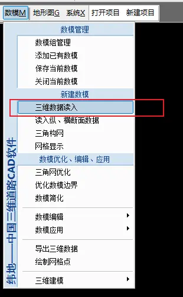
找到地形图，选中，点击打开：
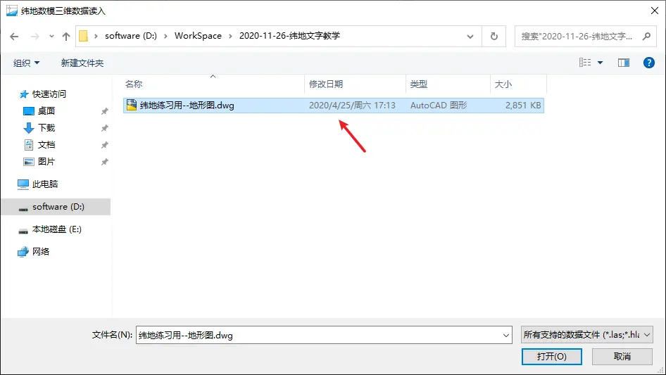
然后选图层：
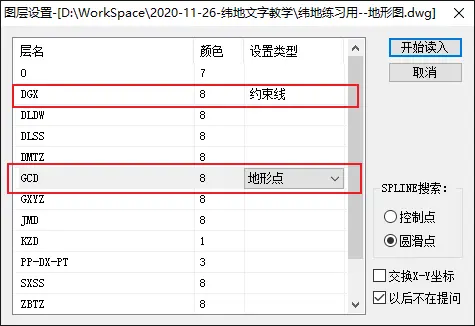
把等高线所在的图层都设置为约束线；
把高程点所在的图层都设置为地形点。
注意
这里的
DGX是我这个地形图等高线所在的图层名字，如果你的地形图等高线所在的图层名字可能和我的不一样，有的叫首曲线，计曲线，还有的是拼音，都有可能，这里我特意把图层名字标记出来，因为有些同学看了我的视频之后，找不到和我一样的 DGX、GCD，然后就不知道怎么做了。高程点也是一样，有些地形图，高程点的图层名字不叫 GCD，那你需要点击看看那个图层的名字叫什么。
而且有些地形图，等高线不止在一个图层，可能在多个图层，都要设置为约束线。高程点的所有图层都要设置为地形点。
然后点击开始读入：
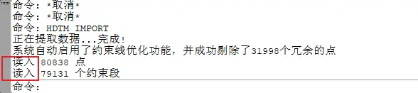
然后你注意看命令栏，等显示读入 xxxx 个点，读入 xxxx 个约束段，然后就说明读入数据成功了。
这里可能会有些同学会显示读入 0 个数据，即读入 0 个点，0 个约束段。这种情况是因为你的地形图没有高程值，你可以随便选中一条等高线或者地形点，然后右键——特性，看看有没有 Z 值，不能读入数据的，Z 值都是 0 的。所有解决方案就是你需要自己手动输入 Z 值进去，或者换一个地形图。
三角构网
读入数据之后，点击数模-三角构网
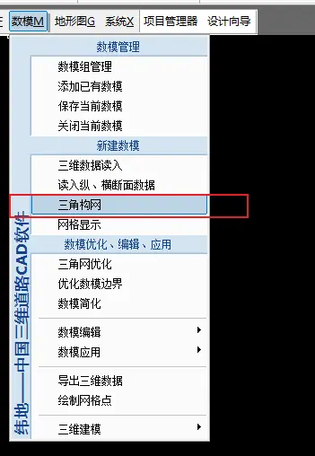
然后看命令栏：
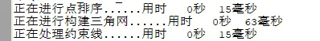
这就说明已经建模成功了，这时你的窗口就会显示这个地形模型：
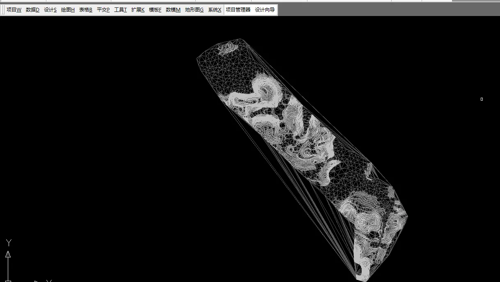
三角构网就是把刚才读入的等高线、高程点的数据构造出这个地形模型。所以这一步也叫建立数模，就是建立数据的地形模型。
这里很多同学的电脑可能不会直接显示，感觉啥也没有。
那只是可能这个模型被缩小了，你看不到，我们双击鼠标轮滚，多双击几次，就会出现了。
双击轮滚的作用是：把当前文件的所有的东西都缩放到当前的窗口；能达到这个效果的操作还有：在命令栏输入命令 Z,回车，输入 A，回车。也可以同样达到一样的效果。
数模优化
如果你的地形模型，高程值比较少，生成的模型比较粗糙，那么可以使用数模优化，进行微小地加密。
如果你的地形高程值比较密，可以不用做数模优化，做数模优化的话就会更加接近真实地形。
点击数模-三角网优化：
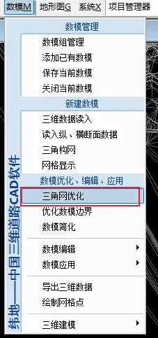
弹出窗口，点击开始优化：
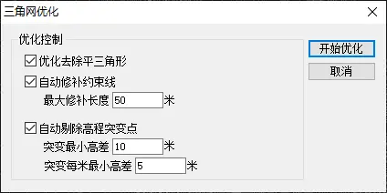
然后你的地形模型就会变得更加平滑，做纵断面设计时，地面线也会相对接近真实地形。
数模应用
我们建立出来了带有数据的地形模型，是为了拿来用的，这些数据可以为之后的纵断面、横断面提供数据，比如说纵断面我们要进行拉坡，就需要有一个地面线，那个地面线就是从这个地形模型读入的。
不过如果要应用，那么我们得自己去点击：
点击数模应用-纵断面插值：
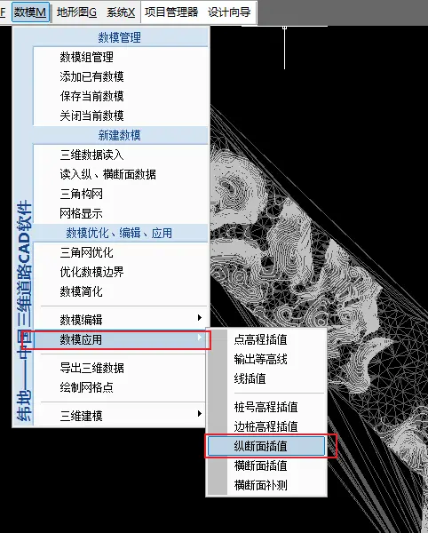
然后弹出窗口：
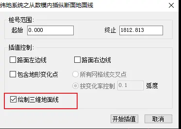
这里可以什么都不用勾选，特别是不要勾选包含地形点变化，不然的话你会发现你的桩号会自动多了很多。
这里我勾选绘制三维地面线，只是为了说明一些问题。
点击开始插值，弹出窗口，让你保存地面线文件：
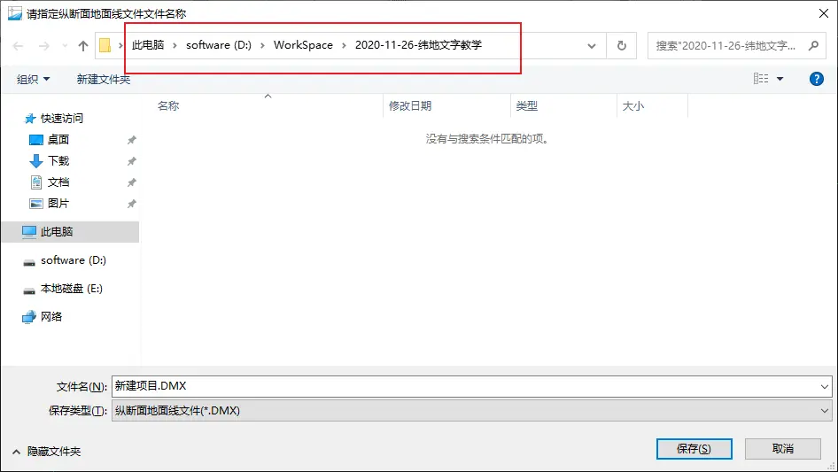
然后看到命令栏：
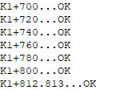
所有桩号都 OK 了，这就说明插值成功。
而且可以看到地形模型上也多了一条红线：
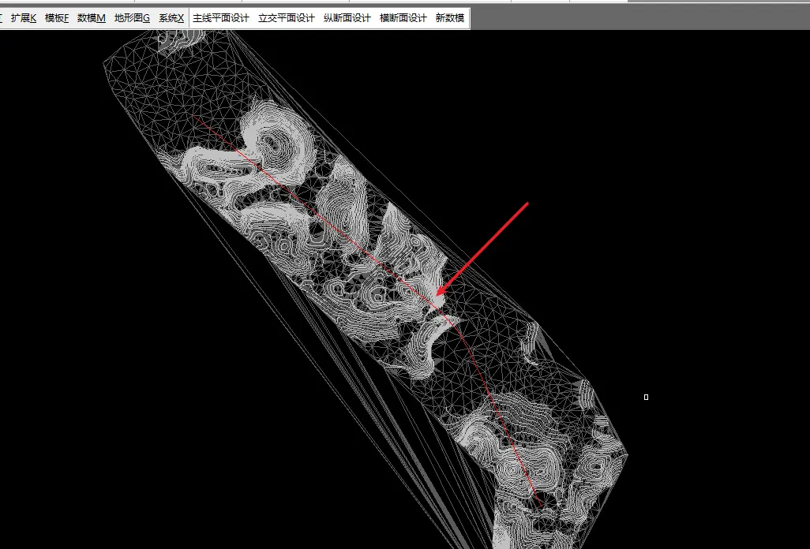
这条红线就是纵断面的地面线，如果大家电脑带的动，可以另存这个 dwg 文件，然后去三维空间查看，这时一条有高度变化的线。
然后继续横断面插值：
点击数模-数模应用-横断面插值：
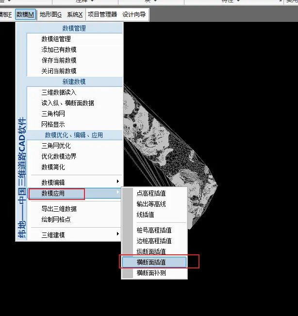
然后弹出窗口：
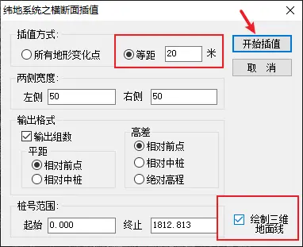
这里同样不要勾选所有地形点变化，否则桩号会变得很多，选择等距 20m,其他的不用变。
我这里勾选绘制三维地面，是为了看插值之后会在地形模型上画出什么。不勾选也不影响设计。
然后，弹出窗口，找个地方保存：
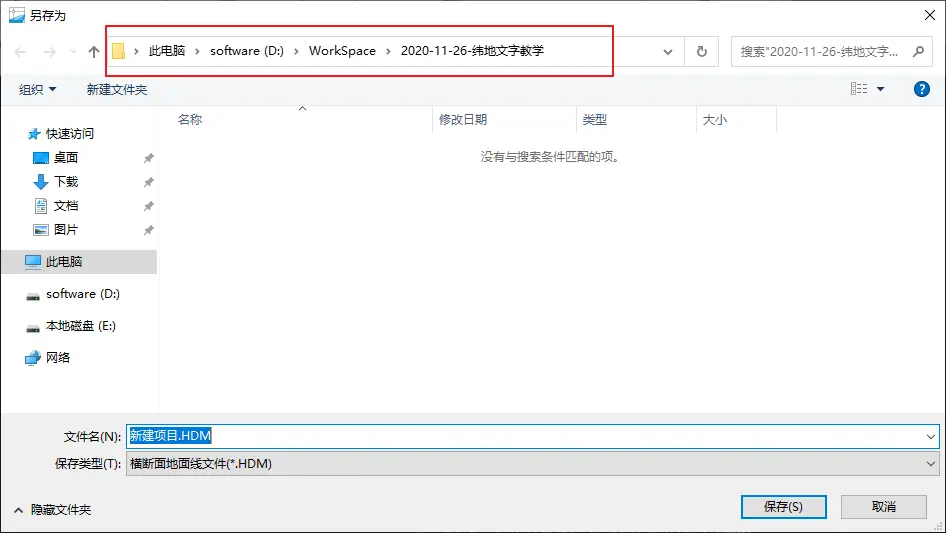
这时，看到命令栏提示：
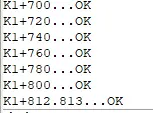
所有桩号都已经 OK 了。然后我们看看这个地形模型的变化：
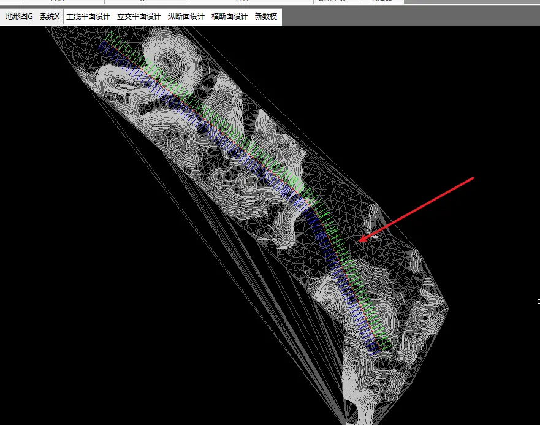
这时，多了很多线，这些线就是每隔 20M 桩的横断面标记，只是一个标记而已，就是刚才我们插值之后，我填入了等距 20m，所有这里就每 20m 绘制一个横断面。
然后这个宽度并不是你设计的车道的宽度，大家注意看插值的时候，有个两侧宽度的数据，那里是 50，大家可以自己测量一些这个短线的长度，刚好就是 50。
到此，数模就已经做完了，我们保存一下项目，这一步必须保存项目。点击保存项目之后，提示要保存数模文件：
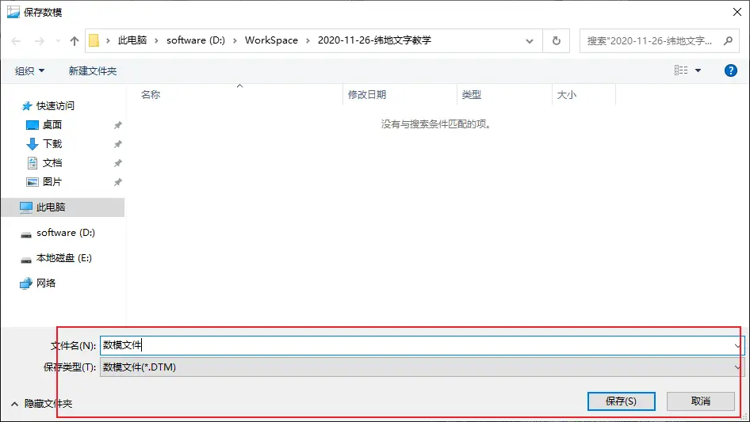
自己命名一下，然后点击保存，提示保存完成之后，即可：
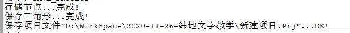
如果你这一步不保存项目，然后软件崩溃，那么你就全部重新来过，然后可能会出现文件路径错误之类的提示，就是因为项目文件没有索引到 DMX、HDM 这些文件。
建立数模这一步，是纯粹的软件操作，所以内容不多。
然后，如果我们现在要继续往下操作，就必须把窗口上的这个地形模型删除了：
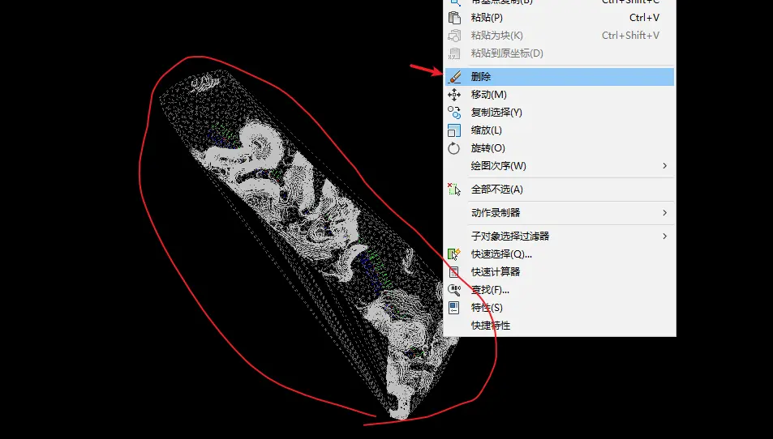
不然，待会显示纵断面会有问题。